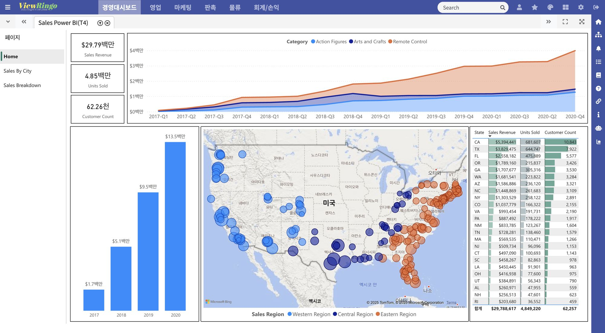
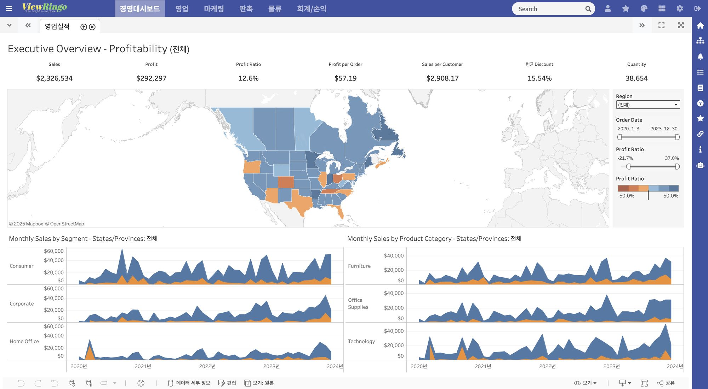
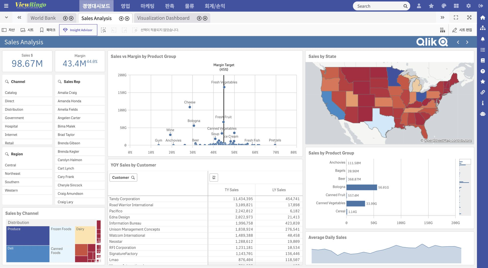
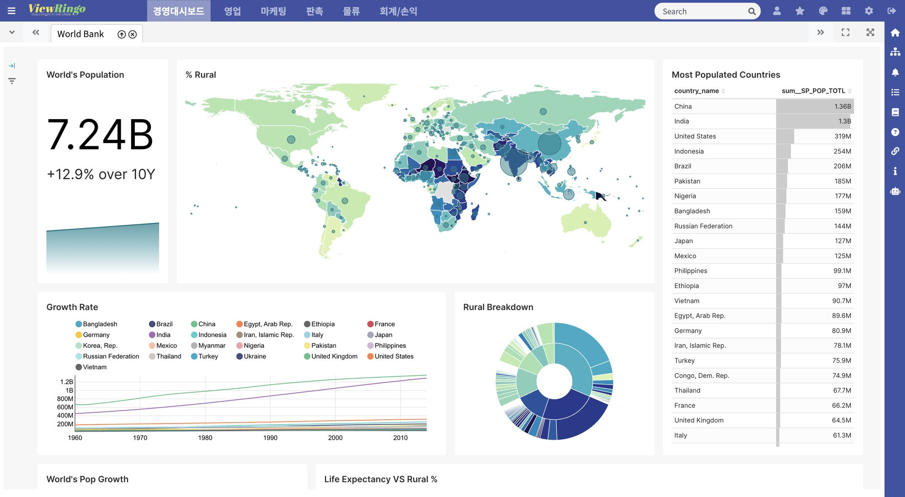
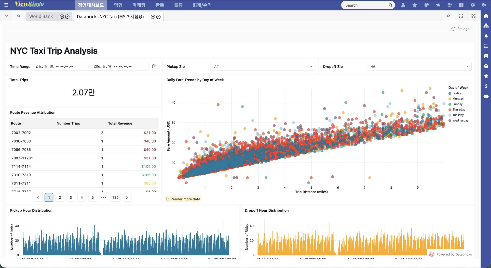
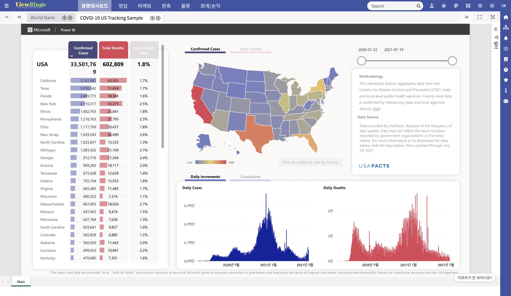

Power BI Report ServerNEW
ネットワーク分離・データ主権の環境でも、クラウド移行なしにBIを統合します。
- PBIX · RDL 両対応 — 対話型レポートとページ分割レポートを自動判別
- 既存のAD権限をそのまま — Windows統合認証（Kerberos · NTLM）
- 階層ツリー登録 — PBIRSのフォルダ構造をポータルメニューに反映
Power BI
BI統合の先へ。ユーザーとBI・分析プラットフォームの間に置く共通レイヤー。
既存のBIを置き換えることなく、一つのユーザー体験とセキュリティ体系に統合します。
Replace your BI tools? No. Unify them. · 8つのBIプラットフォーム · Cloud & On-Premise · SSO · Governance · AI Analytics







BIは部門ごとに増え続け、ユーザーと管理者はその間を行き来しながら同じ作業を繰り返しています。
部門・グループ会社ごとの個別導入が積み重なり、一つの企業の中に異なるBIが共存します。
ツールごとにアカウントと権限体系が異なり、同じ人に同じ範囲を付与する作業さえ何度も繰り返します。
レポートの数字がどのテーブルから来たのか、変更すると何が壊れるのか、答える手段がありません。
ツールを減らすのではなく、ポータルを統合します。
BIツールを追加しても、ユーザー体験・認証・権限・メニュー・ログの体系はそのまま維持されます。
Power BI · Tableau · Qlik Sense · Superset · Longview · MicroStrategy · Databricks · PBIRSを単一のURL、単一の画面で。
ポリシーベースの権限グループでアクセスを一元化し、すべてのアクセスを活動ログに記録します。
Databricks GenieとData Assistantをポータルの権限体系の中で利用します。
分散したBI資産
ツールごとに異なるURL · 異なるUI · 異なるアカウントと権限
ViewRingo Enterprise Analytics Portal
一つのURL · 一つのUI · 一つの認証と権限
各ベンダー公式の埋め込み・認証方式をそのまま使うため、既存のレポート権限と監査体系が維持されます。
クラウドに出せないレポートと、アカウントを配れないユーザーのために。
ネットワーク分離・データ主権の環境でも、クラウド移行なしにBIを統合します。
Databricksアカウントなしで、ポータルからそのままダッシュボードを閲覧。
自然言語による照会と画面要約を、ポータルの認証・権限体系の中で提供します。
自然言語で質問すると、根拠となるSQLとチャートも一緒に返します。
見ている画面をそのまま要約し、自然言語でデータに質問します。
精度はモデルではなく、検証済みのコンテキストから生まれます。
この数字がどこから来て、変更すると何が壊れるのか — BIツールを横断して一つの画面で。
SALES_MART
テーブルSL_TRX
カラムNET_AMT
収集対応: Superset · Tableau · Qlik · Power BI · Databricks · PBIRS（Longviewは設計上対象外）
誰が、いつ、どのレポートを見たかを、指標と証跡で。
「TableauのレポートとPower BIのレポートを一度に質問できますか？」
ベンダー内蔵AIの答えはすべて「いいえ」— 性能ではなく設計上の境界のためです。ViewRingoは違います。
8種のBIのレポートを一度に照会
オンプレミス · 閉域網で実行
お客様保有のLLMに接続
いずれも社内のEnterprise PortalからSSOで入り、ViewRingoポータルのメニュー・権限でレポートを閲覧します。
H社 · Azure
1種のBIから始め、ツールの追加はメニュー登録だけで拡張します。
L社 · On-Premise
一つのポータルメタDB（SQL Server · PostgreSQL対応）で、2つのツールのメニューと権限を一元化しました。
導入環境とご利用中のBIツールをお知らせいただければ、構成案をご返信します。
ViewRingo Enterprise Analytics Portal
Product Introduction v2.3 · 2026.09
または直接お問い合わせ: support@viewringo.com